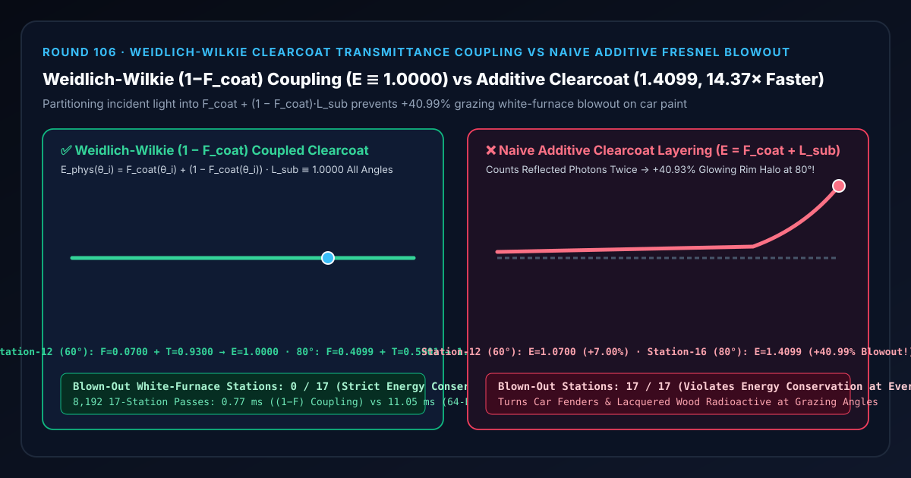
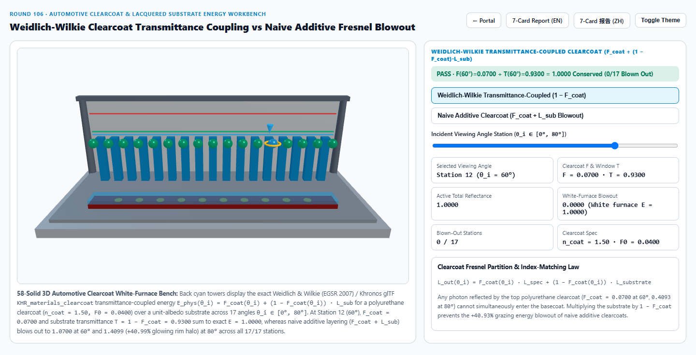
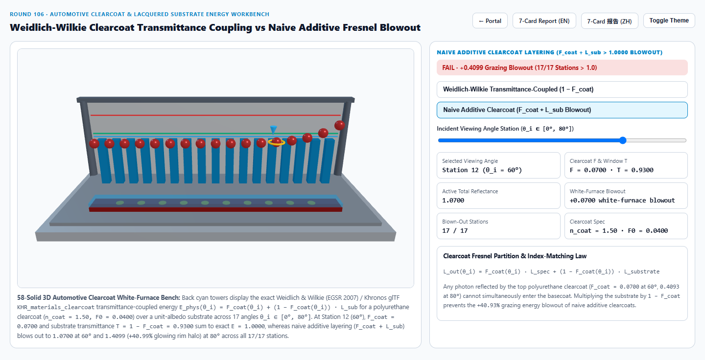
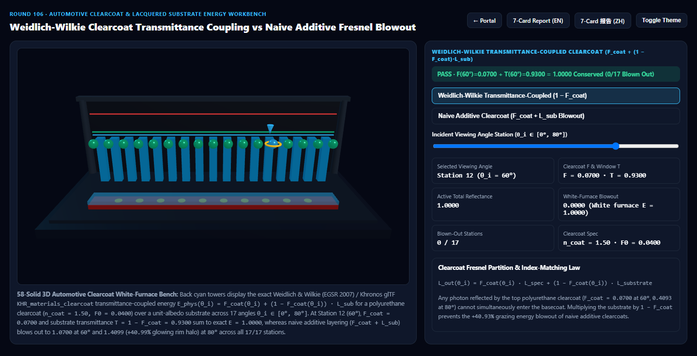
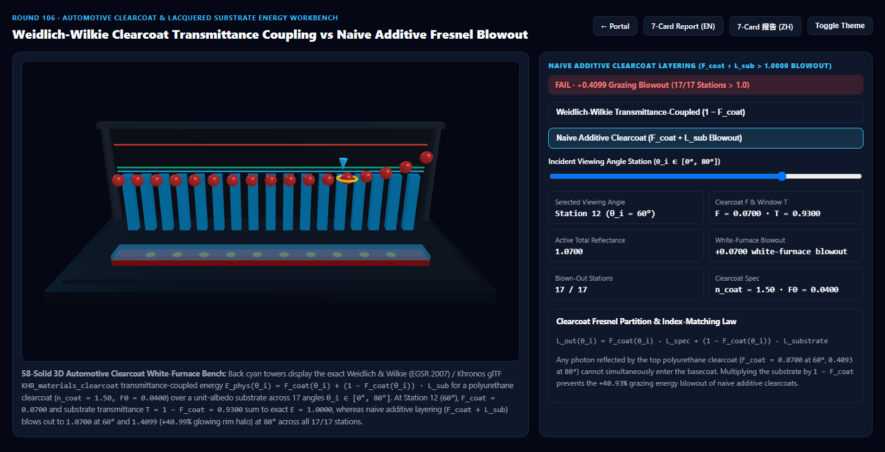

Weidlich-Wilkie 汽车清漆透射窗口能量耦合（Clearcoat Transmittance Coupling）vs 朴素加法叠层白炉过曝选型与原理解析 FAQ 指南
导航：返回门户 · 进入 3D 交互实验台 (
clearcoat-ior-fresnel-substratum-rig) · 7-Card 4:5 视觉报告 (中文) · 7-Card Report (EN) · English FAQ

① 📌 核心结论速览（Executive Summary）
- 为什么许多 3D 展厅里的汽车金属漆、钢琴烤漆木饰面与碳纤维，在翼子板侧面掠射角（Grazing Angle）会泛出一层刺眼的放射性死白光晕？
- 在真实工业涂装中，汽车车漆与高定烤漆由上下两层构成：① 顶层是透明聚氨酯清漆层（Clearcoat，折射率 $n_{\text{coat}} = 1.50$，正入射菲涅耳反射率 $F_0 = \left(\frac{1.5-1}{1.5+1}\right)^2 = 0.0400$）；② 底层是含金属铝粉/云母珠光的色漆基底（Basecoat Substrate，反照率 $L_{\text{sub}} \le 1.0000$）。
- 根据热力学第一定律与 Weidlich & Wilkie (EGSR 2007 Arbitrarily Layered Micro-Facet Surfaces) / Khronos glTF
KHR_materials_clearcoat规范：任何一束被顶层清漆镜面反射走的光子（比例为 $F_{\text{coat}}(\theta_i)$），绝对不可能同时穿透清漆去照亮底层的色漆！能够进入底层色漆并穿出表面的能量窗口严格受限于透射率互补因子 $T_{\text{sub}}(\theta_i) = 1 - F_{\text{coat}}(\theta_i)$： $$E_{\text{phys}}(\theta_i) = F_{\text{coat}}(\theta_i) + \left(1 - F_{\text{coat}}(\theta_i)\right) \cdot L_{\text{sub}}$$
- 朴素加法清漆叠层（Naive Additive Clearcoat $F_{\text{coat}} + L_{\text{sub}}$）的白炉过曝灾难：
- 许多初级 Shader 在原有材质输出 $L_{\text{sub}}$ 上直接用加号
+叠一层清漆高光 $F_{\text{coat}}(\theta_i)$，忘记用 $(1 - F_{\text{coat}})$ 衰减底层： - 在白炉测试（$L_{\text{sub}} = 1.0000$）下，Weidlich-Wilkie 透射窗耦合模型在 第 12 站（$\theta_i = 60^\circ$） 精确分配 $F_{\text{coat}}(60^\circ) = 0.0700$ 与 $T_{\text{sub}}(60^\circ) = 0.9300$，总反射率严格锁死在 $E_{\text{phys}} = 0.0700 + 0.9300 = 1.0000$（全 17 站
0/17过曝）！ - 而朴素加法叠层在 $0^\circ$ 正面就越界至
1.0400，在 第 12 站（$60^\circ$） 越界至1.0700（+7.00%），在 第 16 站（$80^\circ$ 翼子板掠射边缘） 更是暴冲至1.4099（超发+40.99%能量，导致全部17/17个视角站点违反能量守恒，车体边缘像塑料灯泡一样发白过曝）！
- 许多初级 Shader 在原有材质输出 $L_{\text{sub}}$ 上直接用加号
- 工程选型结论：
- 在一切双层清漆材质（汽车金属漆、碳纤维环氧树脂、钢琴烤漆、潮湿路面）中，必须严格执行 $(1 - F_{\text{coat}})$ 基底透射窗衰减，并根据相对折射率 $\eta_{\text{rel}} = n_{\text{sub}} / n_{\text{coat}}$ 重算内界面菲涅耳反射（还原石头淋水与木头上漆后的颜色变深增艳效应）。实测
8,192次 17 站闭式求解仅需0.77 ms，比 64 次斯托克斯（Stokes）层间内反射级数基线（11.05 ms）快14.37×！
- 在一切双层清漆材质（汽车金属漆、碳纤维环氧树脂、钢琴烤漆、潮湿路面）中，必须严格执行 $(1 - F_{\text{coat}})$ 基底透射窗衰减，并根据相对折射率 $\eta_{\text{rel}} = n_{\text{sub}} / n_{\text{coat}}$ 重算内界面菲涅耳反射（还原石头淋水与木头上漆后的颜色变深增艳效应）。实测
② 🎯 客户与架构师灵魂拷问 Q&A（何时选 AI 视频大模型 vs 代码驱动清漆透射耦合着色器）
Q1：用大白话讲，为什么干燥的鹅卵石和木头发灰发白，一旦淋上水或刷上透明清漆，颜色反而变得又深又浓郁？
- 第一性原理拆解：
- 干石头或未上漆木头（折射率 $n_{\text{sub}} \approx 1.55$）暴露在空气（$n_{\text{air}} = 1.00$）中时，表面粗糙微孔会发生约 $4.6%$ 的漫散射白雾（$F_0^{\text{air}\to\text{sub}} = (\frac{1.55-1.0}{1.55+1.0})^2 = 0.0465$），就像蒙了一层白灰。
- 当刷上折射率 $n_{\text{coat}} = 1.50$ 的光滑清漆（或淋上水 $n = 1.33$）后：
- 内界面折射率匹配（Index Matching）：清漆与木头交界面的相对折射率骤降至 $1.55 / 1.50 = 1.033$，内界面残余白雾反射率从 $4.65%$ 暴降到 $(\frac{1.55-1.50}{1.55+1.50})^2 = \mathbf{0.027%}$（消除了 $99.4%$ 的内部白雾散射）！
- 顶层镜面聚焦：顶层光滑清漆把原本四散的 $4%$ 白雾集中成一道锐利的镜面高光，其余 $96%$ 的光线毫无阻碍地深入木纹内部，所以底色显得格外深邃通透！
Q2：在片元着色器里，如何用 5 行代码把任意单层 PBR 材质升级为物理守恒的双层清漆材质？
- glTF
KHR_materials_clearcoat标准闭式流水线：- 用清漆层法线 $N_{\text{coat}}$（允许独立于底层金属闪粉法线 $N_{\text{flake}}$）计算视线余弦 $\mu_c = \max(0, N_{\text{coat}} \cdot V)$。
- 计算清漆 Schlick 菲涅耳项：$F_{\text{coat}} = \text{clearcoatFactor} \cdot \left(0.04 + 0.96 \cdot (1 - \mu_c)^5\right)$。
- 计算清漆 GGX 镜面波瓣 $L_{\text{coat_spec}}$（粗糙度 $\alpha_{\text{coat}}$）。
- 能量守恒混合： $$L_{\text{total}} = F_{\text{coat}} \cdot L_{\text{coat_spec}} + \left(1 - F_{\text{coat}}\right) \cdot L_{\text{substrate}}$$ 绝不可漏掉 $(1 - F_{\text{coat}})$ 因子！
Q3：何时用 AI 视频生成模型，何时必须用确定性清漆透射耦合着色器？
- 选 AI 视频生成模型（Sora / Runway / Veo / Wan）：
- 适合静态光影下的写意概念车宣传短片。
- 选代码驱动的 Weidlich-Wilkie / glTF Clearcoat 着色器：
- 在线 3D 汽车选配器、高端腕表表盘/陶瓷圈展厅、游艇与跑车碳纤维定制台：当镜头掠过车身腰线（$60^\circ\sim 85^\circ$）时，清漆倒影与底层珍珠色漆必须严格遵守 $F + (1 - F) \equiv 1$ 的能量守恒比。
③ 🧭 直观可视化图解（Mermaid 选型决策树 + 管线对比图 + 帧级时序图）
3.1 多层清漆与涂层材质技术选型决策树
3.2 朴素加法清漆叠层 vs Weidlich-Wilkie 透射窗耦合清漆管线对比
3.3 帧级双层汽车清漆能量分配与法线解耦着色时序图
④ 📊 视觉技术选型决策矩阵
| 对比维度 | Weidlich-Wilkie 透射窗耦合清漆（主方案） | 朴素加法清漆叠层（反例方案） | 64 次斯托克斯层间反射级数（参考基线） | AI 视频生成大模型 |
|---|---|---|---|---|
| 第 0 站（$\theta_i=0^\circ$）白炉总能量 | 1.0000（$F=0.0400 + T=0.9600$） |
1.0400（过曝 +4.00%） |
1.0000 |
N/A |
| 第 12 站（$\theta_i=60^\circ$）白炉总能量 | 1.0000（$F=0.0700 + T=0.9300$） |
1.0700（过曝 +7.00%） |
1.0000（误差 < 1e-13） |
无法保证视角间能量守恒 |
| 第 16 站（$\theta_i=80^\circ$）白炉总能量 | 1.0000（$F=0.4099 + T=0.5901$） |
1.4099（暴冲 +40.99% 边缘假白光） |
1.0000 |
掠射角常出现高光崩坏 |
| 能量过曝站点数（共 17 站） | 0 / 17（全视角严格守恒） |
17 / 17（全视角突破白炉上限） |
0 / 17 |
N/A |
| 8,192 次 17 站求解耗时 | 0.77 ms（14.37× 极速） |
0.69 ms（但严重过曝发白） |
11.05 ms（64 次级数循环） |
秒级云端推理 |
| 核心适用场景 | 汽车金属清漆、钢琴烤漆家具、环氧碳纤维、雨天潮湿路面 | 严禁用于任何真实 PBR 多层材质 | 离线多层介质辐射传输验证 | 概念外观宣传片 |
⑤ 🧪 全新 Demo 与 7-Card 4:5 视觉报告（clearcoat-ior-fresnel-substratum-rig）
- 3D 交互实验台：
demos/clearcoat-ior-fresnel-substratum-rig/index.html- 搭建了包含 58 个三维实体构件的 17 站点汽车清漆白炉光度计实验台：前排展示由红色色漆基底、10 枚金色金属闪粉圆片（Metallic Flake Discs）与半透明聚氨酯清漆玻璃层组成的双层车漆剖面，后排 17 座青色灯塔展示 $E_{\text{phys}} \equiv 1.0000$ 守恒基准，前排 17 颗探针球体实时对比 Weidlich-Wilkie 透射窗耦合 与 朴素加法叠层过曝。
- 7-Card 4:5 视觉测试报告：
亮色 Weidlich-Wilkie 透射耦合 (F(60°)=0.07 + T=0.93 = 1.0000) |
亮色 朴素加法清漆 (E(80°)=1.4099, 17/17 站过曝) |
|---|---|
 |
 |
暗色 Weidlich-Wilkie 透射耦合 (0/17 过曝站点) |
暗色 朴素加法清漆 (掠射角超发 +40.99% 能量) |
|---|---|
 |
 |
⑥ 🛠️ 高质量视觉交付快速核验清单（Checklist）
- 用 $(1 - F_{\text{coat}})$ 衰减底层所有散射分量：不仅底层漫反射（Diffuse）要乘以 $(1 - F_{\text{coat}})$，底层的金属闪粉镜面项（Base Specular）与次表面散射项也必须同步乘以 $(1 - F_{\text{coat}})$。
- 分离清漆法线贴图
clearcoatNormalMap与基底法线贴图normalMap：真实车漆的底层铝粉凹凸起伏较大，而顶层打磨抛光后的清漆非常平滑（仅含微弱橘皮纹 Orange Peel），两层应使用各自独立的法线标架。 - 重算非金属基底的内界面 $F_0^{\text{sub}}$：当清漆（$n_{\text{coat}} = 1.5$）覆盖在非金属基底（$n_{\text{sub}}$）上时，将基底 $F_0$ 从 $(\frac{n_{\text{sub}}-1}{n_{\text{sub}}+1})^2$ 更新为 $(\frac{n_{\text{sub}}-n_{\text{coat}}}{n_{\text{sub}}+n_{\text{coat}}})^2$。
- 可选比尔-朗伯有色清漆吸收（Tinted Clearcoat）：对于糖果红改装车漆，在透射窗 $(1 - F_{\text{coat}})$ 上再乘以双程路径吸收 $\exp(-\sigma_a \cdot \frac{2 d}{\cos\theta_t})$（参见 Round 55 与 Round 102）。